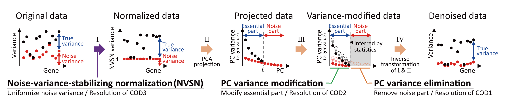

RECODE documentation
Resolution of the curse of dimensionality (RECODE) is a noise reduction method for single-cell sequencing data. github
The license gives permission for personal, academic, or educational use. Any commercial use is strictly prohibited. Please contact imoto.yusuke.4e<at>kyoto-u.ac.jp for licensing terms for any commercial use.
Installation
The python package of RECODE supports PyPI install.
$ pip install screcode
You can also install the development version of lingam package from GitHub:
$ pip install git+https://github.com/yusuke-imoto-lab/RECODE.git
or update to the latest version:
$ pip install screcode -U
To use RECODE, import screcode.
import screcode
The R package is available here.